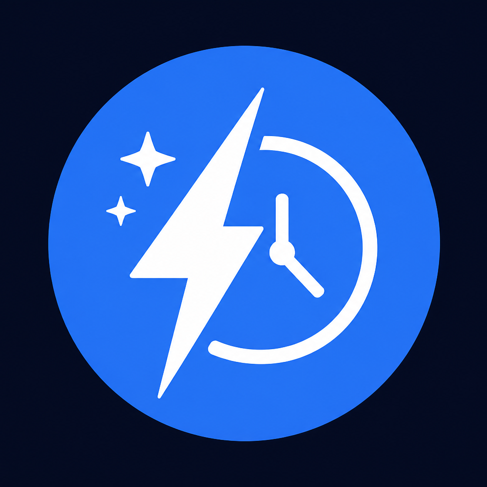

After Work AI Lab
퇴근후 AI실험실
퇴근 후 30분, AI로 일 빨리 끝내기
직장인용 자동화 루틴·프롬프트를 매주 공유합니다.
무료 시작팩 받기
인스타 최신 게시물에 댓글로 「템플릿」을 남기면
DM으로 무료 시작팩을 보내드립니다.
무료 시작팩 구성
- 업무 메일 요약 프롬프트 5종
- 회의록 1분 정리 프롬프트
- 주간 보고 초안 템플릿
- 퇴근 후 30분 루틴 체크리스트
퇴근 후 30분 루틴
- 5분 오늘 할 일 3개 정리
- 10분 AI로 초안 생성
- 10분 사람이 검수·수정
- 5분 내일 할 일 예약
운영 안내
본 페이지는 인스타그램 프로필 링크용입니다.
제휴 링크는 콘텐츠 성과를 확인한 뒤 단계적으로 추가합니다.